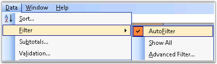
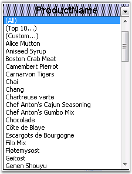

MS Excel AutoFilter feature literally makes filtering out unwanted data in a data list, as easy as clicking a button. When the cell pointer is located within any cell in your data list, open the Data menu, point to Filter, and select AutoFilter. Once this is done, the program adds drop-down buttons to each of the field names in the top row of the list. This feature is specifically used in large spreadsheets, when the user wants to look for particular data, based on some criteria.

Figure 128: AutoFilter from Data Menu
AutoFilters in Essential XlsIO
Essential XlsIO also comes with APIs for reading and writing AutoFilters in a worksheet. You can specify the range of data that needs to be viewed through the FilterRange property. Following code example illustrates writing AutoFilters.
|
[C#]
// Creating an AutoFilter in the first worksheet. Specifying the AutoFilter range. sheet.AutoFilters.FilterRange = sheet.Range["A1:B7"]; |
|
[VB.NET]
' Creating an AutoFilter in the first worksheet. Specifying the AutoFilter range. sheet.AutoFilters.FilterRange = sheet.Range("A1:B7") |
XlsIO also provides options to set the built-in conditions for filters by using various properties of IAutoFilter. Following code example illustrates various conditions based on which data can be filtered.
|
[C#]
IAutoFilter filter = sheet1.AutoFilters[0]; filter.IsTop = true; filter.IsTop10 = true; filter.Top10Number = 5; |
|
[VB.NET]
Dim filter As IAutoFilter = sheet1.AutoFilters(0) filter.IsTop = True filter.IsTop10 = True filter.Top10Number = 5 |

Figure 129: Writing Autofilters with XlsIO
See Also
Data Validation, Importing and Exporting, Template Markers, Grouping and Ungrouping